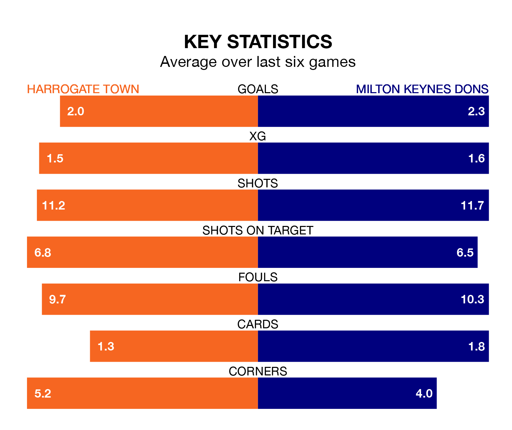

Milton Keynes Dons travel to the EnviroVent Stadium for Saturday's match against Harrogate Town looking to bounce back from defeat last time out in EFL League Two.
The Dons, who sit fourth in the league after 44 games, fell to a 4-1 home defeat to Mansfield Town on April 13.
They face a Harrogate side who secured a draw in their last match, a 2-2 tie with Sutton United, and who sit 12th in the table.
With 74 goals in 44 games so far this season, Milton Keynes are scoring more than average in the league with 1.7 goals per game. And they are conceding fewer than average, letting in 61 goals at a rate of 1.4 per game.
Harrogate, meanwhile, are below average scorers, with 1.2 goals per game, compared to a league average of 1.5. They have conceded 1.4 goals per game.
Dons' Alex Gilbey is among the league's most creative players, racking up 10 assists in 44 appearances so far this season, and holding third spot in EFL League Two's assist charts.
For Town, Matty Daly has set up the most goals, having laid on nine assists in 38 games.
The home side are in reasonable form in EFL League Two, with three wins and two draws from their last six games.
With three wins and a draw over that period, the Dons' form is slightly worse – they have taken 10 points from 18, compared to Harrogate's 11.
Saturday's match will be refereed by David Webb, who has taken charge of one EFL League Two game so far this season, issuing no red cards and booking four players. He has not awarded any penalties.
He is yet to oversee a match featuring either Harrogate or Milton Keynes this season.
Updated: 15:40 (UTC), 18/04/24